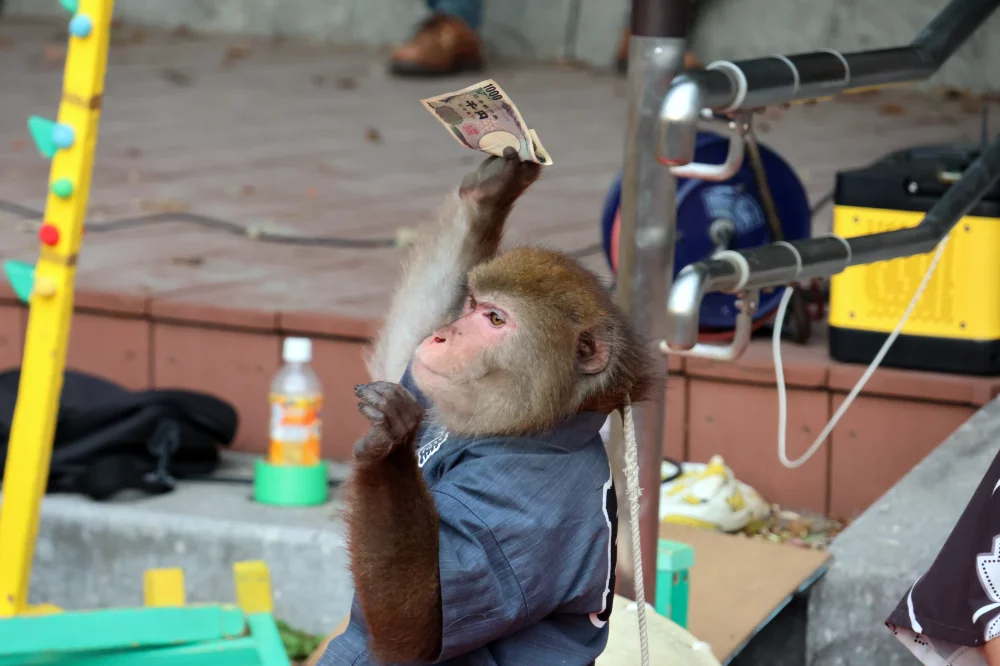

🦥 nvim_get_option_value
このサイトでは以前、nvim_buf_get_optionを使用したコードを提示していたのですが、これは既にdeprecatedです。
なので必然的にnvim_get_option_valueへお乗り換えです 🚅
...まあ、そうは言っても終盤に来て説明されるまでもない事ですので、すぐ終わっちゃいます😆
nvim_get_option_value({name}, {opts}) *nvim_get_option_value()*
Gets the value of an option. The behavior of this function matches that of
|:set|: the local value of an option is returned if it exists; otherwise,
the global value is returned. Local values always correspond to the
current buffer or window, unless "buf" or "win" is set in {opts}.
option の値を取得する。
この関数の動作は |:set| と同じです。
オプションが存在する場合はローカル値が返され、存在しない場合はグローバル値が返されます。
ローカル値は、{opts} で "buf" または "win" が設定されていない限り、常に現在のバッファまたはウィンドウに対応します。
Parameters: ~
• {name} Option name
• {opts} Optional parameters
• scope: One of "global" or "local". Analogous to |:setglobal|
and |:setlocal|, respectively.
• win: |window-ID|. Used for getting window local options.
• buf: Buffer number. Used for getting buffer local options.
Implies {scope} is "local".
• filetype: |filetype|. Used to get the default option for a
specific filetype. Cannot be used with any other option.
Note: this will trigger |ftplugin| and all |FileType|
autocommands for the corresponding filetype.
Return: ~
Option value
そういえば、先日(と言っても結構前なんだけど) 新宿に降りて、西口側に行ったんです。
あの辺ってなんか絶賛再開発中🏗️ でガチャガチャしてるんですよね〜。 それを横目に階段で地上に上がろうとしたんですが...。
封鎖されている...❗ほぼ全て😑
How does it feel to be one of the beautiful people?
Now that you know who you are
崇高な人達の輪に加われた気分はどう?
君は自分が何者かを知ったんだ
What do you want to be?
And have you traveled very far?
それでどうしたいの?
君は届かない所に旅したつもり？
ここでふと思うわけです。
まあ🤭 Prison 👮♀️
Far as the eye can see
せいぜい ここから目の届く範囲だろ
⚾ Try
簡単ではあるんですけど、やっぱ確信は欲しいので「試しに動かしてみよー。」って思うわけです。
なので、こんなコードを カ キ マ シ タ ァ❗❗
vim.api.nvim_create_user_command('Example', function()
local input = vim.fn.input('Option name? > ')
local param = vim.api.nvim_get_option_value(input, {});
vim.notify(input .. ": " .. tostring(param))
end, {})
多分こんな感じでしょう❓
早速試してみましょう❗
...ってしたら、なんか実在する適当なオプションを入力してあげてください😉

はい、いけました😆
How does it feel to be one of the beautiful people?
How often have you been there?
崇高な人達の輪に加わるってどんな気分?
もう頻繁に行ってるの?
Often enough to know
知れるには十分な頻度でね
What did you see when you were there?
そこでは何が見えるんだい?
Nothing that doesn't show
見えないものなんて ないんだよ
🤖 copilot-cmp
これでもう自信を持って扱えますね❗あとは簡単😊
このサイトで言うと、
copilot-cmpで示した
extensions/nvim-cmp-actions.luaで使ってるはずです。
local function has_copilot()
+ if vim.api.nvim_get_option_value('buftype', {}) == 'prompt' then
- if vim.api.nvim_buf_get_option(0, 'buftype') == 'prompt' then
return false
end
local line, col = unpack(vim.api.nvim_win_get_cursor(0))
return col ~= 0 and vim.api.nvim_buf_get_text(0, line - 1, 0, line - 1, col, {})[1]:match '^%s*$' == nil
end
まあ、こんなもんでしょ😇
内容なんて、もうほぼ無いよう🤣
Baby, you're a rich man
Baby, you're a rich man
ベイビー! よお リッチマン!!
ベイビー! よお リッチマン!!

Baby, you're a rich man too
ベイビー! よお 君もリッチマンだ!!
You keep all your money in a big brown bag inside a zoo
君は全てのカネを 動物園のデカい茶封筒に詰め込んでるんだ!
What a thing to do
何を企んでるんだ!
🎺 Baby, You’re a Rich Man
How does it feel to be one of the beautiful people?
Tuned to a natural E
崇高な人達の輪に加われた気分はどう?
すっかり E に同調してるな
Happy to be that way
幸せに思うよ
なんていうかさあ...。
最近色々思うこともあるんだけど、他人の言葉を使って抗うのはわたしの弱さです。
自分でもびっくりするぐらい好き勝手やってるけど、どうか大目に見てください...😭
このサイトも、ようやく Endgame なんで❗
...理由になってねぇな🙄
Now that you've found another key
さて、またひとつキーを見つけたよ
🦸♀️ WILL RETURN
What the hell is this?
これは一体どういうことだ？
friday what are they firing at?
friday、奴らは何を撃っている？
Something just entered the upper atmosphere
現在 何かが上層大気圏に突入しています